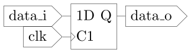

VHDL Grundbegriffe
Allgemeines
Mittels VHDL kann eine digitale Schaltung beschrieben werden. VHDL steht für Very High Speed Integrated Cricuit Hardware Description Language. Die wichtigste Beschreibunssprache neben VHDL ist Verilog, welche in der USA weite Verbreitung findet.
Da mittels VHDL eine digitale Schaltung beschrieben wird, ist VHDL eine Beschreibungssprache. Sehr oft wird es mit einer Programmiersprache verwechselt!
Aufbau einer VHDL Datei
Eine Komponente, die mittels VHDL beschrieben wird besteht aus den folgenden beiden Bestandteilen:
entity- Definiert die Schnittstelle der Komponentearchitecture- Beschreibt die Funktion der Komponente
In einer VHDL Datei können mehrere Komponenten beschrieben werden, es ist allerdings üblich pro Komponente eine Datei zu nutzen.
Bei VHDL spielt die Groß- und Kleinschreibung keine Rolle. Dies gilt für Schlüsselwörter wie entity (kann auch
Entity, ENTITY oder auch eNTity heißen), sowie für Signalnamen.
In diesem Skriptum werden sämtliche Schlüsselwörter und Signale kleingeschreiben. Generics werden großgeschrieben.
Am Begin einer Datei werden die benötigten Bibliotheken deklariert.
Ein Beispiel:
library ieee ; use ieee.std_logic_1164.all; entity dff is port( data_i: in std_ulogic; clk: in std_ulogic; data_o: out std_ulogic ); end entity; architecture behave of dff is begin process(clk) begin if rising_edge(clk) then data_o <= data_i; end if; end process; end architecture;
Diese VHDL Datei beschreibt ein D FlipFlop, dessen Eingang data_i bei einer steigenden Flanke von clk gespeichert wird. Das Signal data_o gibt den aktuellen zustand des FlipFlops wieder und ist gleichzeitig der Ausgang. Der Zustand beim Start(nach dem Reset) ist nicht definiert.
